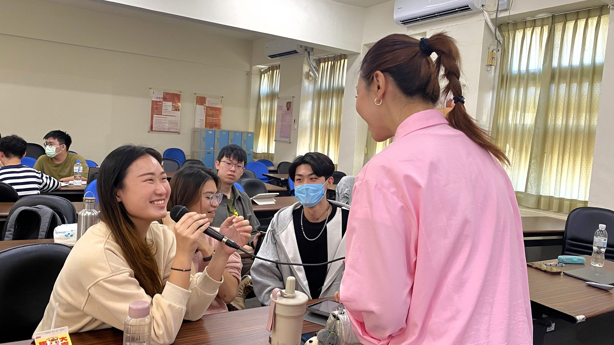

人格特質探索
協助教師理解學生不同的人格特質、學習風格與互動方式，建立更適合的陪伴與引導方式。
High School Educator Development
關於教師培訓 About
透過 4 或 6 小時教師工作坊，協助教師將社會情緒學習（SEL）與人格特質探索融入班級經營、生涯輔導與日常對話，建立一套能持續陪伴學生成長的引導方法。

培訓重點 Key Focus
協助教師理解學生不同的人格特質、學習風格與互動方式，建立更適合的陪伴與引導方式。
將自我覺察、情緒理解與職涯探索，自然融入班級經營與生涯輔導，而非增加額外課程負擔。
結合業師與多元產業案例，引導教師掌握更多職涯探索資源與工具，幫助學生理解不同工作樣貌與未來發展方向。
教學資源 Resources
從教材、培訓到共同備課，協助教師將 SEL 與職涯探索自然融入課堂
Support 01
提供鄉育完整自主學習教案與教材，合作學校可申請公益開源版本，回到班級即可開始使用
Support 02
協助老師理解不同學生的特質、學習風格與資訊吸收方式，將 SEL 自然融入課堂互動與陪伴
Support 03
從學生需求出發，共同討論課程設計與教學策略，協助老師建立更符合班級現況的教學安排
如果您希望將 SEL、人格特質探索與職涯探索帶進校園，歡迎與我們聯繫，共同規劃適合貴校需求的教師培力工作坊。